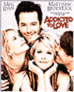
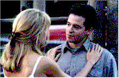
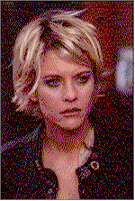

Contents | Features | Reviews | News | Archives | Store |
 |
|
| Movie Credits | Buy It! |

Contents | Features | Reviews | Books | Archives | Store
Addicted to Love
Review by Carrie
Gorringe
Posted 23 May 1997
|  | Directed by Griffin Dunne Starring Meg Ryan, Matthew Broderick, Screenplay by Robert Gordon |
Griffin Dunne’s first feature film, Addicted to Love, suggests that a man should never, ever deceive a woman who wears tight spandex and rides a motorcycle or those with technology who can turn it to more earthly ventures . Maggie (Ryan) and Sam (Broderick) play jilted lovers whose exes, Linda (Preston) and Anton (Karyo), have decided to join forces in an act of lustful cohabitation, an act that distresses Sam but infuriates Maggie to no end. But while the lonelyhearts astronomer decides to wait for his lady love to come to her senses (an occurrence likely to occur about the time that hell freezes over), Maggie is determined to take a more active approach to the problem at hand. She persuades Sam to accept another proposition, formulated along the lines of "Gaslighting" their enemies. And so, Maggie and Sam begin their exercise in mutual madness, as they plant listening devices in the lovers’ trysting place, and compliment their audio torture with the unique addition of a camera obscura (like an overhead projector on steroids, in its modern incarnation) to project their exes’ misdeeds in living color – call it cable for the masochistically lovelorn. Technology and revenge, however, prove themselves to be, like nitroglycerine, a volatile combination, with consequences for all involved.
Addicted to Love Screenwriter Gordon, who studied electrical engineering at UCLA before pursuing screenwriting as a career (Addicted is his first produced feature-length screenplay), realizes that the inclusion of the camera obscura in the film is a clever visual ploy – perhaps too clever for his own good. The original camera obscura (Latin for "dark room" and an invention usually attributed to Da Vinci) was a box large enough to accommodate at least one individual with a pinhole on one side through which images were projected, upside-down, for the purposes of either viewing or tracing, Not surprisingly, given its name, it is also considered to be an important forerunner in the development of photography, expressing as it does the human desire to replicate – and to control – reality. The camera obscura employed by Sam and Maggie, of course, is a metaphor for the distorted ways in which they view their erstwhile beloveds, (as shadowy figures and – oh, let’s use another pun – as the shallow personalities that Sam and Maggie wish to project upon them) but, unless you possess the same knowledge concerning the origins of the camera obscura as Gordon, you will probably miss the metaphoric subtleties of the device as it’s employed here, and see it as merely a means to a voyeuristic end. Sam and Maggie are indeed voyeurs, but they are voyeurs trapped within the walls of their hideout, searching vainly for control over their frayed lives, and retarding their emotional growth in the process. At this level, Addicted to Love plays like a low-rent version of Beckett’s Waiting for Godot; like Vladimir and Estragon before them , Sam and Maggie, despite the acts of revenge that accumulate in their favor, are caught in a loop, and our heroes have to stop waiting for unparalleled humiliation to descend on the so-called wrongdoers before getting on with their lives. By not providing an explanation of how the camera obscura works (Maggie is told only that it is a projection device, and finds the explanation to be adequate), Gordon and Dunne rob some filmgoers of much needed information, and ultimately rob the film of its relatively rich underpinnings by potentially distorting its meaning, thereby turning the film, in an ironic twist, into its own version of a camera obscura. This complaint may be mere pedantry, but, frankly, not providing a clear explanation of devices used in a film – especially ones that carry a great deal of freight – is a direct violation of one of the most fundamental rules of feature-filmmaking: if the operating principle of a device is too cumbersome to easily explain to the audience, don’t use it. Filmmakers can’t complain about the incomprehension of audiences when they don’t give the audience anything intelligent to work with, or play obscure jokes while expecting everyone else to get the punch line.
Moreover, said visual ploys can’t compensate for certain dire deficiencies in the script, the biggest one being: after you’ve abused your ex-lover to the point of utter ruination, what is there left to accomplish? This point is reached forty-five minutes into the piece, and there are still fifty minutes or so to fill before we get around to the inevitable denouement, leaving very little for this talented cast to do, except to work on holding up the script’s increasingly crumbling credibility (the arrival of this inert state is sudden and all the more disappointing, because it had been preceded by some extremely inspired work, most notably a side-splitting scene set in Anton’s restaurant, and which seems to be the film’s high point). Broderick is reduced to alternating between smoldering resentment and making calf’s eyes at whoever strikes his fancy at any given time. It could have been a great comedic turn, had the script given his deft manipulations between these polar extremes something more than a few interesting setups, because he and Ryan have great on-screen chemistry; instead, he is left to twist in situational limbo most of the time, as is Preston. Kayro, a French actor best known for playing the intelligence officer assigned to train Anne Parillauld in La Femme Nikita, is reduced to playing a grotesque parody of Gerard Depardieu. Ryan’s woman-who-loves-too-much character is especially flawed, and the weaknesses in this role are the most detrimental to the film, as Ryan is the film’s icy-cold heart. The actress tries gamefully to work with Maggie’s mixture of daffiness and malevolence (the effect is something like a hybrid of Jean Arthur and Nurse Ratched with the usual gloss of Ryan’s innately dewy beauty to make the concoction far more palatable), but she doesn’t come close to pulling the rabbit out of the hat; her character has been conceived with far too much virulent hatred, and the fire in her belly keeps consuming any of her attempts at the breezy insouciance so necessary for screwball comedy to connect with an audience (Stapleton, in contrast, makes far more progress in this regard with her delightful cameo as Maggie’s Nana).
There’s really no excuse for this type of indifference to technique, because screwball comedy is hardly an unfamiliar genre – long-neglected, perhaps, but a filmmaker doesn’t have to climb mountains to find its most shining examples; a trip to the nearest video store would offer up many of them, and the conclusion they would reveal to the observant viewer is one of the most obvious. As the master authors of this genre – such as Preston Sturges and Robert Riskin (Capra’s collaborator) – very well knew, the secret to making the underlying hostility between characters and their various situations was to have them put on a façade of indifference to their fate, while the audience well knew that, underneath it all, the characters were sweating buckets psychologically. Likewise, the audience would be sweating buckets, waiting for the other shoe of the masquerade to drop with an embarrassing thud, and enjoying the pain immensely. The actors in Addicted to Love play their few best moments to perfection, but the final act has them wearing their hearts on their sleeves like an overripe boil, and this shameless ploy inspires less sympathy than it does an urge to hunt for the largest pin available. Despite the film’s quota of elegant pans and a flawless editing style, they can’t conceal the film’s empty core. Part of the tag line for Addicted to Love’s promotional campaign describes it as "a comedy about lost loves". The film really should be described as being about lost opportunities – on too many levels.
Contents | Features | Reviews | News | Archives | Store
Copyright © 1999 by Nitrate Productions, Inc. All Rights Reserved.